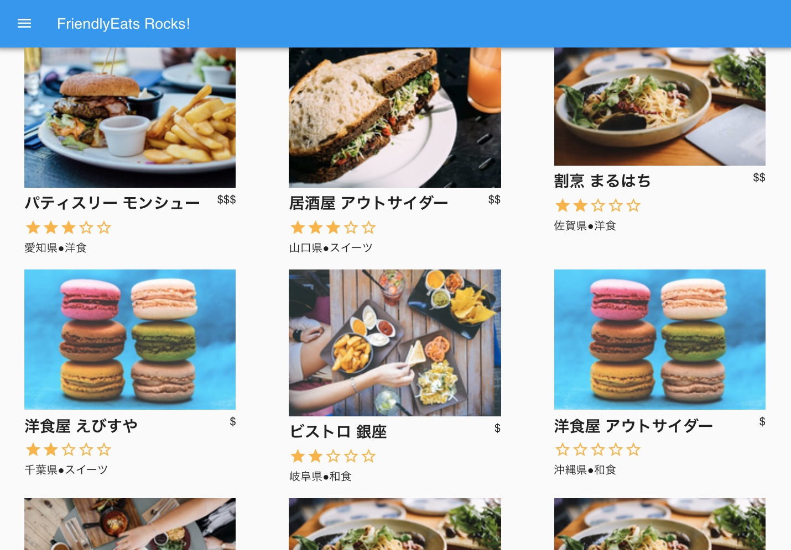

FriendlyEats-vueは、Vueを使ったFirebase / Cloud Firestoreのチュートリアル用のアプリです。Cloud Firestoreを学習するために最小限のプログラムをするだけでCloud Firestoreを使ったアプリケーションを作ることができます。

このチュートリアルでは以下のことを学習します。
このチュートリアルを始めるに当たって、必要な開発環境は以下となります。
重要: 作成された Firebaseのプロジェクトは「FriendlyEats」という名前ですが、Firebaseは自動的に「friendlyeats-1234」のような固有のプロジェクトIDを割り当てます。この固有のIDは、あなたのプロジェクトを識別するのに必要です（CLIなどで）。「FriendlyEats」は単にプロジェクトの名前です。
これから作成するアプリケーションでは、ウェブ上で使えるFirebaseのサービスのうちいくつかを利用します。
以下では、Firebaseコンソールを用いた「Firebase Auth」および「Cloud Firestore」の設定方法について、順を追って説明します。
認証はこのチュートリアルの焦点ではありませんが、何らかの形式の認証を使用することは重要です。
このアプリでは、匿名ログインを使用します。つまりユーザーは明示的な操作をすることなくログインします。
そのためには、匿名ログインを有効にする必要がありまず。
これでユーザーがWebアプリにアクセスするときに、匿名でログインできるようになりました。詳細は、匿名認証のドキュメントをお読みください。
このアプリは、レストランの情報や評価を保存、更新情報を受け取るために、Cloud Firestore（データーベース）を使います。
そのためには、Cloud Firestoreを有効にする必要があります。
テストモードでは、開発中にCloud Firestoreへ書き込みが自由にできるようになります。セキュリティを強化は、このチュートリアルの後半でおこないます。
3. サンプルのソースコード取得とインストール
以下のコマンドを使って GitHub レポジトリをクローンします
git clone https://github.com/isamu/FriendlyEats-vue
サンプルコードは📁FriendlyEats-vueディレクトリにCloneする必要があります。
以後、このディレクトリ内でコマンドラインを実行してください。
cd FriendlyEats-vue
npmのパッケージをインストールします。
npm install
Firebaseのコンソールから設定を取得し、src/firebase/firebase.js にコピーします。
const firebaseConfig で始まる部分をコピーし、src/firebase/firebase.js 内の相当する部分を置き換えますIDE（WebStorm、Atom、Sublime、Visual Studio Code ...）を使用している場合、📁FriendlyEats-vueディレクトリを開くかインポートします。このディレクトリには、レストラン情報とオススメ情報を表示するアプリの未完成なモックコードが含まれています。チュートリアルを通してこのアプリを実装していくので、このモックコードを編集できる必要があります。
Firebaseコマンドラインインターフェイス（CLI）を使用すると、Webアプリをローカルで開発したり、Firebase Hostingにデプロイすることができます。
Note: CLIをインストールするには、通常NodeJSに付属しているnpmをインストールする必要があります。
1 . 次のnpmコマンドを実行して、CLIをインストールします。
npm -g install firebase-tools
動作しませんか？ npmのpermissionを変更する必要がある場合があります。
2 . 次のコマンドを実行して、CLIが正しくインストールされたことを確認します。
firebase --version
Firebase CLIのバージョンがv6.2.0以降であることを確認してください。
3 . 次のコマンドを実行して、Firebase CLIを認証します。
firebase login
Firebase Hostingのアプリの設定をアプリのローカルディレクトリとファイルから取得するように、ウェブアプリテンプレートを設定しました。ただし、これを行うには、アプリをFirebaseプロジェクトに関連付ける必要があります。
4 . コマンドラインが、先ほどcloneしたディレクトリーになっているか確認してください（通常FriendlyEats-vueディレクトリー。pwdで現在のディレクトリーを確認できます）
5 . 次のコマンドを実行して、アプリをFirebaseプロジェクトに関連付けます。
firebase use --add
6 . プロンプトが表示されたら、本プロジェクトのプロジェクトIDを選択し、Firebaseプロジェクトにエイリアスを指定します。
エイリアスは、複数の環境（本番、ステージングなど）を切り替える場合に役立ちます。ただし、このチュートリアルでは、defaultというエイリアス名を入力します（スペルを間違えると後にインデックスをデプロイする操作等でエラーが発生するので注意してください）。
7 . コマンドラインの残りの指示に従ってください。
アプリで実際に作業を開始する準備ができました！アプリをローカルで実行しましょう！
1 . 次のコマンドをローカルのCLIで実行します:
npm run serve
2 . 成功すると次の文を含むメッセージが表示されます
- Local: http://localhost:8080/
Vueサーバがローカルで起動しています。 ブラウザ http://localhost:8080 を開くとサンプルアプリを見ることができます。 Vueを起動すると自動的に開く場合もあります。8080という数字は少し別の番号になっている場合もあります。
3 . ブラウザで http://localhost:8080 を見る
クラウド上のFirebaseプロジェクトに接続されているFriendlyEatsアプリが表示されます（初回起動時はしばらく時間がかかる場合があります）。
アプリは自動的にクラウド上のFirebaseプロジェクトに接続し、匿名ユーザーとしてサインインしました。
このセクションでは、Cloud Firestoreにデータを書き込みます。Firebaseコンソール上で手動でデータ入力を行うこともできますが、Cloud Firestoreの基本的な書き込みを学習する為に、アプリ自体でデータ生成/入力を行います。
Firestoreデータは、コレクション、ドキュメント、フィールド、およびサブコレクションで構成されています。各レストラン情報をドキュメントとして、restaurantsと呼ばれる最上位のコレクションに保存します。
そして、各レストランのレビューをratingsと名付けたサブコレクションに保存します。
Tip: Firestoreデータモデルの詳細については、ドキュメントのドキュメントとコレクションをご覧ください。
このアプリの主なモデルオブジェクトはrestaurantです。restaurantsコレクションにレストランのドキュメントを追加するコードを書きましょう。
src/components/FriendlyEats.Data.js ファイルを開きますaddRestaurant 関数を探しますexport const addRestaurant = (data) => {
const collection = firebase.firestore().collection('restaurants');
return collection.add(data);
};
上記のコードにより、restaurantsコレクションに新しいドキュメント(データ)が追加されます。ドキュメントのデータはJavaScriptオブジェクトです。
この関数は、次のような処理をします。
restaurantsコレクションへの参照を取得します(* 実際にどのようにデータが生成されるか興味がある人は src/FriendlyEats/FriendlyEats.Mock.js のaddMockRestaurantsとgetRandomRestaurantの実装を見てください。)
まだ画面には何も表示されませんが、Cloud Firestoreにはデータが登録されているはずです。
実際にみてみましょう。
Firebaseコンソールの「Cloud Firestore」タブに移動すると、restaurantsコレクションに新しいドキュメントが表示されます。
おめでとうございます！！WebアプリからCloud Firestoreにデータを書き込みが成功しました！！
次のセクションでは、Cloud Firestoreからデータを取得してアプリに表示する方法を学習します。
このセクションでは、Cloud Firestoreからデータを取得してアプリに表示する方法を学習します。 2つの重要な手順は、クエリの作成とスナップショットリスナーの追加です。このリスナーには、クエリに一致するすべての既存データが通知され、更新をリアルタイムで受信します。
最初に、レストランのデフォルトのフィルタリングされていないリストを提供するクエリを作成しましょう。
src/components/FriendlyEats.Data.js ファイルを開きますgetAllRestaurants 関数を探しますexport const getAllRestaurants = () => {
const query = firebase.firestore()
.collection('restaurants')
.orderBy('avgRating', 'desc')
.limit(50);
return query;
};
上記のコードでは、restaurantsという名のトップレベルコレクションから最大50件のレストランを取得するクエリを作成しています。これらは評価の平均順（現在はすべてゼロ）に並べられています。このクエリを定義後、データの読み込みとレンダリングを行うgetDocumentsInQuery関数にこのクエリを渡します。
これを行うには、スナップショットリスナーを追加します。
src/components/FriendlyEats.Data.js を開きますgetDocumentsInQuery 関数を探しますexport const getDocumentsInQuery = (query, renderer) => {
return query.onSnapshot((snapshot) => {
if (!snapshot.size) return renderer.empty();
snapshot.docChanges().forEach((change) => {
if (change.type === 'removed') {
renderer.remove(change.doc)
} else {
renderer.display(change.doc)
}
});
});
};
上記のコードでは、クエリの結果に変更があるたびにquery.onSnapshotをコールバックで呼び出します。
snapshotとして渡します。これは、Cloud Firestoreのrestaurantsコレクション全体(50件)を意味します。そしてchangeには、全ての個々のドキュメントが渡され、それをrenderer.display関数に渡します。change.typeはremovedとなります。したがって、この場合、UIからレストランを削除する関数を呼び出します。両方のメソッドを実装したので、アプリを更新し、Firebaseコンソールで前に表示したレストラン情報がWebアプリに表示されていることを確認します。このセクションを正常に完了した場合、WebアプリはCloud Firestoreでデータを読み書きできています。
レストランのリストが変更されると、このリスナーは自動的にデータを更新します。
Firebaseコンソールに移動して、レストランを手動で削除するか、名前を変更してみてください。サイト上のデータも更新されます。
Note: Query.get()メソッドを使用することにより、更新通知を常時リアルタイムに受け取るのではなく、Cloud Firestoreからドキュメントを一度だけ取得することもできます。
ここまでは、onSnapshotを使用して更新をリアルタイムで取得する方法を実装しました。
つぎは、アプリ内の特定のレストランをクリックした時にトリガーされる機能を実装しましょう。
src/components/FriendlyEats.Data.js を開きますgetRestaurant関数を探しますexport const getRestaurant = (id) => {
return firebase.firestore().collection('restaurants').doc(id).get();
};
このメソッドを実装すると、各レストランのページを表示できるようになります。リスト内のレストランをクリックするだけで、レストランの詳細ページが表示されます。
現時点では評価を追加することはできませんが、この機能はチュートリアルの後半で実装します。
今のところ、アプリにはレストランのリストが表示されていますが、ユーザーがニーズに基づいてフィルタリングする方法はありません。このセクションでは、Cloud Firestoreの高度なクエリを使用してフィルタリングを有効にします。
すべての「点心（Dim Sum）」レストランを取得する簡単なクエリの例を次に示します。
var filteredQuery = query.where('category', '==', 'Dim Sum')
その名前が示すように、where() メソッドは、条件に一致するフィールドを持つコレクション内のドキュメントを取得します。この場合、カテゴリが「点心（Dim Sum）」のレストランのみを取得しています。
このアプリでは、ユーザーは複数のフィルターをチェーンして、「サンフランシスコのピザ」や「人気のあるロサンゼルスのシーフード」などの特定のクエリを作成できます。
それでは、ユーザーが選択した複数の条件に基づいてレストランをフィルタリングするクエリを作成するメソッドを作成してみましょう。
src/components/FriendlyEats.Data.js を開きますgetFilteredRestaurantsを探しますexport const getFilteredRestaurants = (filters) => {
let query = firebase.firestore().collection('restaurants');
if (filters.category !== 'Any') {
query = query.where('category', '==', filters.category);
}
if (filters.city !== 'Any') {
query = query.where('city', '==', filters.city);
}
if (filters.price !== 'Any') {
query = query.where('price', '==', filters.price.length);
}
if (filters.sort === 'Rating') {
query = query.orderBy('avgRating', 'desc');
} else if (filters.sort === 'Reviews') {
query = query.orderBy('numRatings', 'desc');
}
return query;
};
上記のコードは、複数のwhereフィルターと1つのorderByを追加して、ユーザー入力に基づいて複合クエリを作成します。このクエリは、ユーザーの要件に一致するレストランのみを返します。
ここで、ブラウザでFriendlyEatsアプリを更新し、価格や都市などのカテゴリでフィルタリングできることを確認しようとしても、まだ完全には動きません。検索結果は「Your Cloud Firestore has no documents in /restaurants/」と表示されます。また、ブラウザのJavaScriptコンソールに次のようなエラーが表示される場合があります。
The query requires an index. You can create it here: https://console.firebase.google.com/project/.../database/firestore/indexes?create_index=...
このエラーが発生する理由は、Cloud Firestoreでほとんどの複合クエリにインデックスが必要なのですが、それをまだ用意していないためです。クエリの際にインデックスを必要とすることで、規模が拡大してもCloud Firestoreを高速に保ちます。
次のセクションでは、このアプリケーションに必要なインデックスを作成してデプロイします。
アプリ内のすべてのパスを探索し、各インデックス作成リンクをたどる必要がない場合は、Firebase CLIを使用して多数のインデックスを一度に簡単に展開できます。
ダウンロードしたソースコードのルートディレクトリに、firestore.indexes.jsonファイルがあります。このファイルには、フィルターに必要なすべてのインデックスが記述されています。
{
"indexes": [
{
"collectionGroup": "restaurants",
"queryScope": "COLLECTION",
"fields": [
{ "fieldPath": "city", "order": "ASCENDING" },
{ "fieldPath": "avgRating", "order": "DESCENDING" }
]
},
...
]
}
次のコマンドでこれらのインデックスをデプロイします。
firebase deploy --only firestore:indexes
数分後、インデックスが有効になり、エラーメッセージが消えます。
Tip: Cloud Firestoreのインデックスの詳細については、ドキュメントをご覧ください。
このセクションでは、ユーザーがレストランにレビューを書き込みする機能を実装します。
今までのところ、書き込みはすべてアトミックで比較的単純です。もし書き込みエラーが発生した場合でも、おおむね単にユーザーに再試行を促すか、でなければアプリ自身が自動的に再試行するでしょう。
しかし、このアプリにはレストランの評価を追加したいユーザーが多数いるため、読み取りと書き込みが複数回あった場合、それらの調整する必要があります。つまり、最初にレビューが作成されなければならず、次いでレストランの評価数 count と平均評価 average rating を更新する必要があります。そしてこれらの操作のうち、どれか1つが失敗し、他が成功した場合、データベースのある部分のデータが別の部分のデータと一致しない、矛盾した状態になります。
幸いなことに、Cloud Firestoreには、単一のアトミック操作で複数の読み取りと書き込みを可能にするトランザクション機能が用意されており、これによりデータの一貫性を維持できます。
src/components/FriendlyEats.Data.js を開くaddRating 関数を探すexport const addRating = (restaurantID, rating) => {
const collection = firebase.firestore().collection('restaurants');
const document = collection.doc(restaurantID);
const newRatingDocument = document.collection('ratings').doc();
return firebase.firestore().runTransaction(function(transaction) {
return transaction.get(document).then(function(doc) {
const data = doc.data();
const newAverage =
(data.numRatings * data.avgRating + rating.rating) /
(data.numRatings + 1);
transaction.update(document, {
numRatings: data.numRatings + 1,
avgRating: newAverage
});
return transaction.set(newRatingDocument, rating);
});
});
};
上記のブロックでは、restaurantsドキュメントのaverageRatingとratingCountの数値を更新するトランザクションを呼び出します。同時に、ratingsサブコレクションに新しいratingを追加します。
注：評価の追加にトランザクションを使うことは、このチュートリアルのケースでは良い使用例です。ただし、実運用アプリでは、ユーザーによる不正操作を避けるために、平均評価の算出は信頼できるサーバーで行う必要があります。これを行う良い方法は、クライアントから直接評価ドキュメントを作成し、Cloud Functionsを利用して新しいレストランの平均評価を更新することです。
警告：サーバーでトランザクションが失敗すると、コールバックも繰り返し再実行されます。アプリの状態を変更するロジックをトランザクションコールバック内に配置しないでください。
このチュートリアルの最初に、アプリのセキュリティルールをテストモードに設定し、自由に読み書きできるようにしました。
実際のアプリケーションでは、望ましくないデータの読み込みや変更を防ぐために、よりきめ細かいルールを設定する必要があります。
rules_version = '2'; より下のコードを以下のルールに置き換えて「公開」をクリックしますservice cloud.firestore {
match /databases/{database}/documents {
// Restaurants:
// - Authenticated user can read
// - Authenticated user can create/update (for demo)
// - Validate updates
// - Deletes are not allowed
match /restaurants/{restaurantId} {
allow read, create: if request.auth != null;
allow update: if request.auth != null
&& request.resource.data.name == resource.data.name
allow delete: if false;
// Ratings:
// - Authenticated user can read
// - Authenticated user can create if userId matches
// - Deletes and updates are not allowed
match /ratings/{ratingId} {
allow read: if request.auth != null;
allow create: if request.auth != null
&& request.resource.data.userId == request.auth.uid;
allow update, delete: if false;
}
}
}
}
これらのルールはアクセスを制限して、クライアントが安全な変更のみ行えることを保証します。例えば：
FirebaseのConsoleを使うかわりに、Firebase CLIを使用してルールをFirebaseプロジェクトに展開できます。作業ディレクトリの
firestore.rulesファイルには、上記のルールが既に含まれています。これらのルールをローカル環境からFirebaseにデプロイするには、次のコマンドを実行します。
firebase deploy --only firestore:rules
重要：セキュリティルールの詳細については、セキュリティルールのドキュメントをご覧ください。
まず、Vueをビルドします。
npm run build
build/以下に静的なファイルが生成されます。
つぎに Cloud Firebase へデプロイします。
firebase deploy --only hosting
以下のように表示されるとデプロイ成功です。
✔ Deploy complete!
Project Console: https://console.firebase.google.com/project/friendlyeats-vue/overview
Hosting URL: https://friendlyeats-vue.firebaseapp.com
Hosting URLをブラウザで見てみましょう。作成したアプリケーションが見えます！
このチュートリアルでは、Cloud Firestoreで基本的な、そして高度な読み取りと書き込みを行う方法と、セキュリティルールでデータアクセスを保護する方法を学びました。
Cloud Firestore の詳細については、次のリソースをご覧ください: